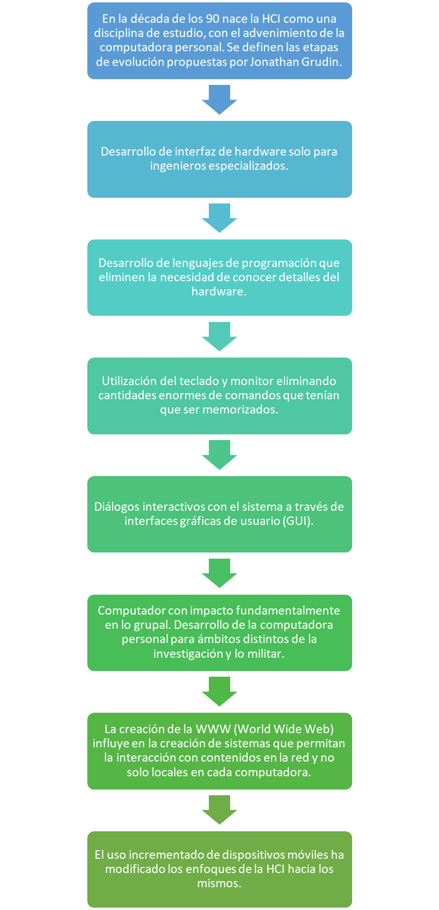

Transcripción:
Tema 2 – Interacción humano-ordenador
Definición:
La interacción Humano-Ordenador (HCI Por su sigla en inglés: Human-Computer Interaction) es una disciplina que se encarga de estudiar cómo las personas interactúan con las computadoras y hasta qué punto las computadoras se desarrollan para interactuar con las personas.
HCI consta de tres componentes: los usuarios, los ordenadores y la interacción entre ellos.
Avances en el desarrollo de software y hardware han transformado nuestra cultura en la manera que trabajamos, estudiamos y jugamos. Por esta razón la HCI se ha convertido en una de las áreas más importantes de estudio en las ciencias de la información y administración de la tecnología. (Herrera, C. 2017).
Historia
A lo largo de los años hasta la actualidad, la HCI ha presentado grandes sucesos desde su creación:

HCI es un dominio interdisciplinario que abarca disciplinas como la informática, la ingeniería de los factores humanos, la inteligencia artificial, la lingüística, la filosofía, la antropología y la ciencia cognitiva.
Objetivos de la HCI
Para la creación de sistemas interactivos, es necesario:
- Comprender factores psicológicos, ergonómicos, organizativos y sociales que determinan como el usuario trabaja y hace uso de las computadoras.
- Desarrollar herramientas y técnicas que permitan a los diseñadores conseguir que los sistemas sean los más idóneos para las actividades a las que se van a aplicar.
- Conseguir que la interacción sea eficiente, efectiva y segura, tanto a nivel individual como a nivel de grupo.
La usabilidad es uno de los conceptos clave de HCI. Se trata de hacer que los sistemas sean fáciles de aprender y usar. Mejora la competitividad, la fidelización de los clientes y reduce los costes.
¿Qué estudia la interacción humano ordenador?
Dentro de los principales aspectos, la HCI estudia:
- Como se afecta la interacción con el hardware y software.
- Los modelos mentales del usuario frente al modelo de la máquina.
- Las tareas que desempeña el sistema y su adaptación a las necesidades del usuario.
- El diseño, que se busca que sea dirigido al usuario y no a la máquina.
- El impacto organizacional, buscando siempre ser positivo.
Interacción y sus paradigmas
La interacción se define como la acción, relación o influencia recíproca entre dos o más elementos. Para la HCI, todos los intercambios que suceden entre la persona y el computador.
Un estilo de interacción es el término genérico para agrupar las diferentes maneras en que los usuarios se comunican o interaccionan con el ordenador.
Los estilos de interacción predominantes son:
- Interfaz de línea de comandos
- Menú y navegación
- Manipulación directa
- Interacción asistida
Los paradigmas de interacción representan los ejemplos o modelos de los que se derivan todos los sistemas de interacción informáticos.
Dentro de los principales paradigmas de interacción podemos encontrar los siguientes:
- Ordenador de sobremesa o portátil
- Realidad virtual
- Realidad Aumentada
- Computación ubicua